側向土壓力理論
單元觀念總整理
黑板用色：綠＝主動 \(K_a\)、藍＝靜止 \(K_0\)／水壓、紅＝被動 \(K_p\)／錯誤做法、黃框＝結論。講義公式沿用同色。
0土壓力是變形的結果
側向土壓力這個單元，公式看起來很多，底層只有一句話：土壓力不是荷重，是變形的結果。同一堆土，牆往哪個方向動、動了多少，決定了係數 \(K\)，也就決定了土壓力是大是小。
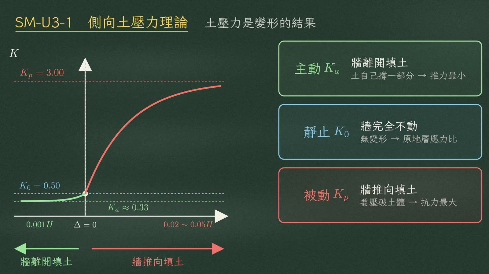
| 狀態 | 牆的位移 | 土體反應 | 所需位移量 |
|---|---|---|---|
| 主動 \(K_a\) | 牆離開填土 | 土體伸張，自己撐住一部分 → 壓力最小 | 約牆高的 0.001 |
| 靜止 \(K_0\) | 牆完全不動 | — | \(\Delta = 0\) |
| 被動 \(K_p\) | 牆推向填土 | 要把土壓破 → 壓力最大 | 牆高的 2～5% 才發揮得出來 |
1莫爾圓撞出 Ka 與 Kp
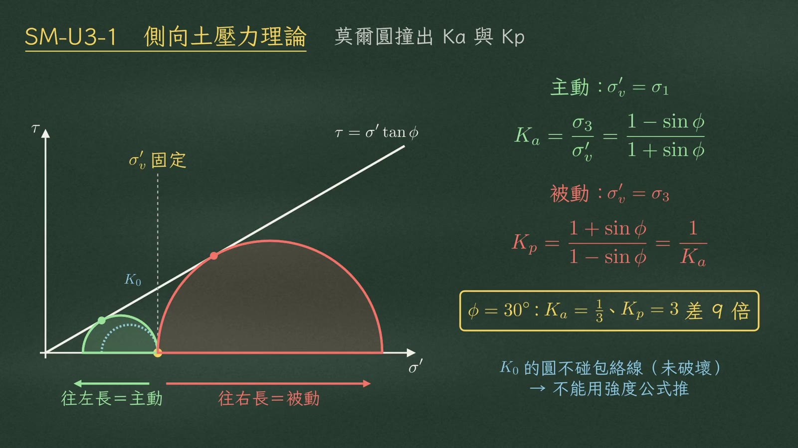
\(K\) 從哪裡來？看莫爾圓。垂直有效應力 \(\sigma_v'\) 固定不動。水平應力變小，圓往左長，碰到破壞包絡線 \(\tau=\sigma'\tan\phi\)，就是主動；水平應力變大，圓往右長，碰到包絡線，就是被動。
主動時，\(\sigma_v'\) 是大主應力；被動時它變成小主應力，\(K_p\) 剛好是 \(K_a\) 的倒數：
\(K_0\) 的圓沒碰到包絡線（未破壞），所以不能用強度公式推。
2乾砂：為什麼是三角形
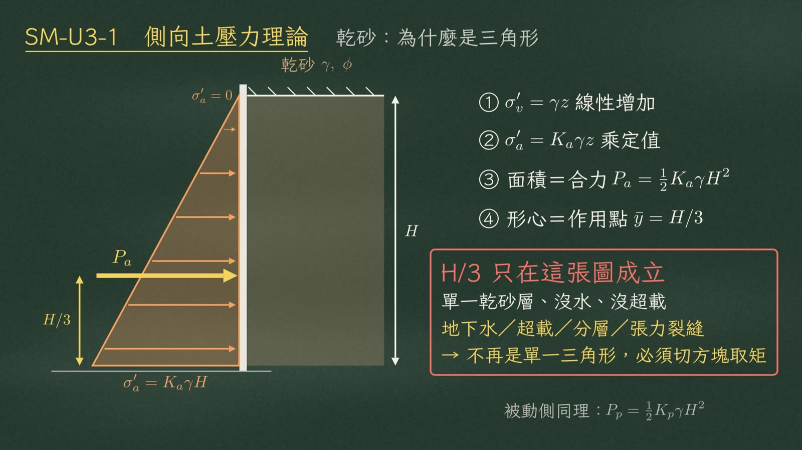
先看最單純的乾砂。垂直有效應力等於 \(\gamma z\)，乘上定值 \(K_a\)，側壓力隨深度線性增加，所以分布一定是三角形。三角形面積就是合力；形心就是作用點，在牆底以上 \(H/3\)。
被動側同理，合力是 \(P_p=\tfrac12K_p\gamma H^2\)。
3黏土：張力裂縫
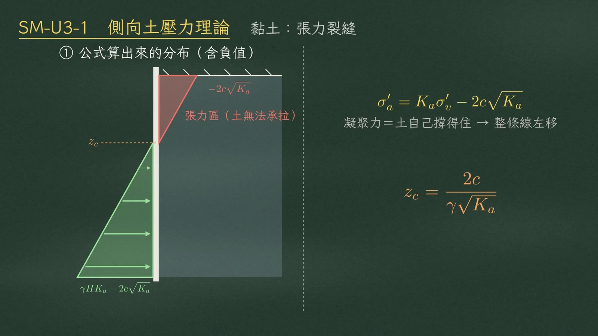
換成黏土，公式多一項：減 \(2c\sqrt{K_a}\)。凝聚力代表土自己撐得住，把整條壓力線往左平移，地表附近算出來變成負值，也就是張力區。張力區的深度 \(z_c\)：
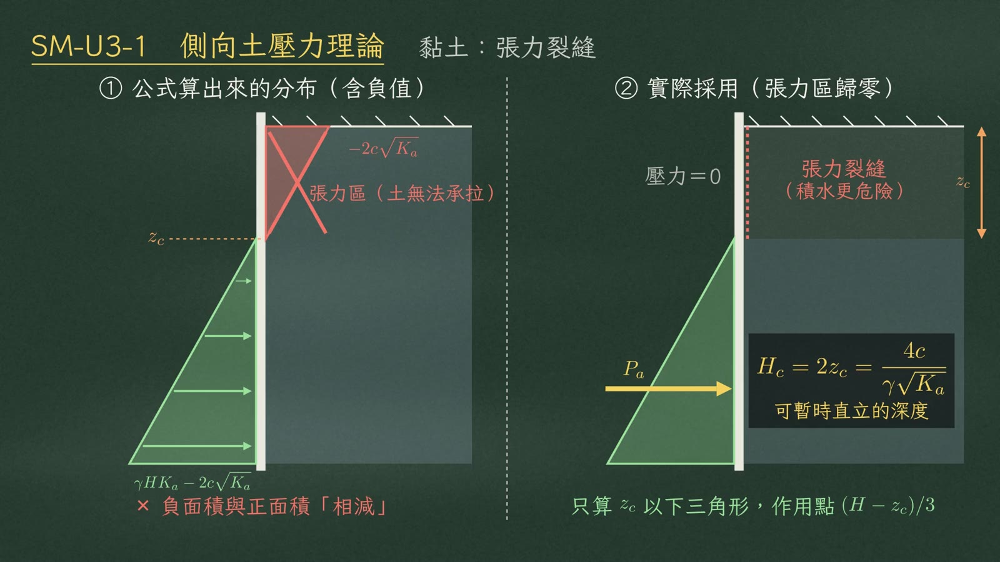
土不能受拉，張力區會裂開，壓力一律歸零。
正確做法只算 \(z_c\) 以下的三角形，作用點上移到 \((H-z_c)/3\)。裂縫積水更危險；而兩倍 \(z_c\)，就是能暫時直立的臨界深度 \(H_c\)：
4地下水：土乘 K，水不乘
地下水位以下，記住三個動作：
② 土壓只乘有效應力 \(K_a\sigma_v'\)
③ 水壓全額另外加上 \(u=\gamma_w h_w\)，不乘 \(K\)
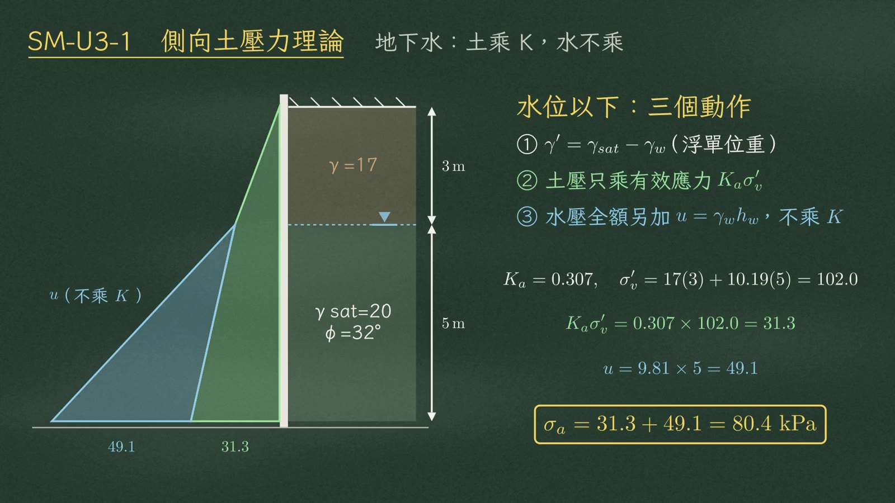
看範例：上層 3 m，\(\gamma=17\)；水位以下 5 m，\(\gamma_{sat}=20\)，\(\phi=32^\circ\)，\(K_a=0.307\)。牆底有效應力 102，乘 \(K_a\) 得 31.3；水壓 \(9.81\times5\)，49.1；合計 80.4 kPa。
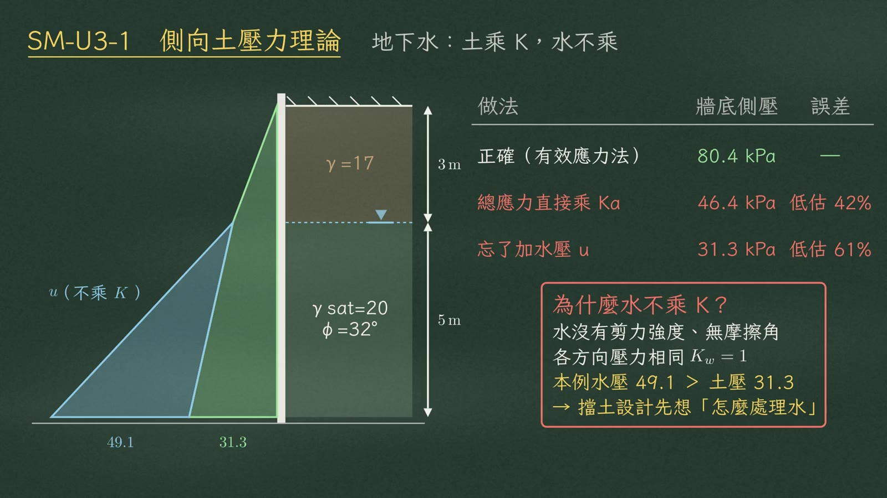
| 做法 | 牆底側壓 | 誤差 |
|---|---|---|
| 正確（有效應力法） | 80.4 kPa | — |
| 總應力直接乘 \(K_a\) | 46.4 kPa | 低估 42% |
| 忘了加水壓 \(u\) | 31.3 kPa | 低估 61% |
5分層：交界面算兩次
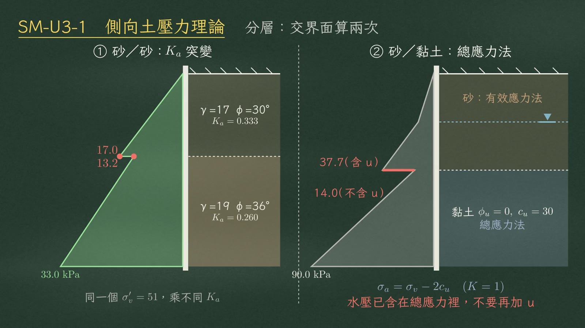
分層土，交界面一定要算兩次。
① 砂疊砂：界面處垂直有效應力都是 51，上層 \(K_a=0.333\)，得 17.0；下層 \(K_a=0.26\)，得 13.2。同一深度兩個值，壓力圖在界面斷開，不要硬連成一條斜線。
② 砂疊黏土更明顯。黏土短期 \(\phi=0\)，用總應力法，側壓等於 \(\sigma_v-2c_u\)，水壓已經包含在總應力裡。界面上方含水壓 37.7，下方只有 14.0，大幅掉下來是正常的。
6切方塊＋對牆底取矩
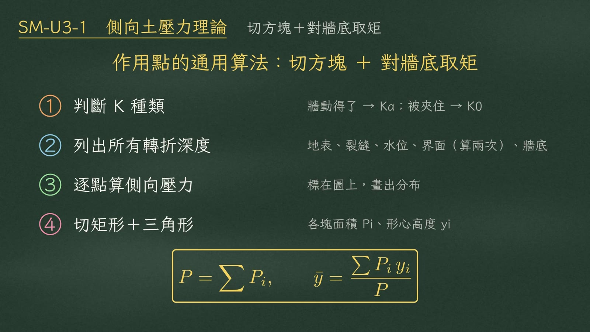
所以作用點的通用算法只有一個：切方塊，對牆底取矩。四步驟：
| 步驟 | 內容 |
|---|---|
| ① 判斷 \(K\) 的種類 | 牆動得了 → \(K_a\)；被夾住 → \(K_0\) |
| ② 列出所有轉折深度 | 地表、裂縫、水位、界面（算兩次）、牆底 |
| ③ 逐點算側壓力 | 標在圖上，畫出分布 |
| ④ 切成矩形＋三角形 | 各塊面積 \(P_i\)、形心高度 \(y_i\) |
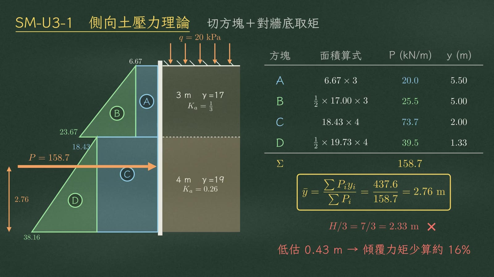
看範例：地表超載 20 kPa，上層 3 m、\(K_a=\tfrac13\)，下層 4 m、\(K_a=0.26\)。轉折值是 6.67、23.67、18.43、38.16。切成 A 到 D 四塊：
| 方塊 | 面積算式 | \(P\)（kN/m） | \(y\)（m） |
|---|---|---|---|
| A | \(6.67\times3\) | 20.0 | 5.50 |
| B | \(\tfrac12\times17.00\times3\) | 25.5 | 5.00 |
| C | \(18.43\times4\) | 73.7 | 2.00 |
| D | \(\tfrac12\times19.73\times4\) | 39.5 | 1.33 |
| Σ | 158.7 |
各塊乘上形心高度再加總，437.6，除以 158.7：
7超載怎麼進來
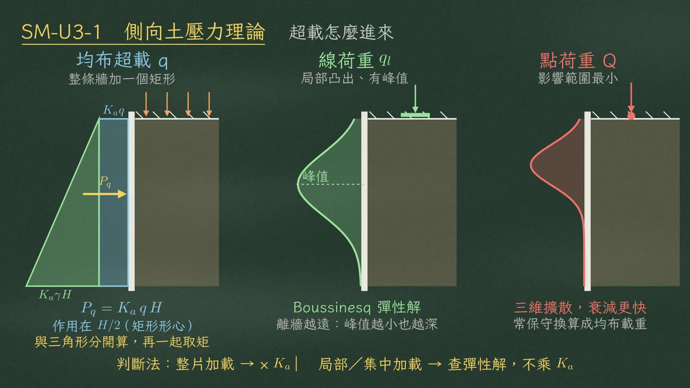
超載怎麼進來？整片的均布超載 \(q\)，等於每個深度都多了 \(q\) 的垂直應力，乘 \(K_a\) 變成一個矩形，合力作用在 \(H/2\)（矩形形心）：
它要和土壓三角形分開算，再一起取矩，別把矩形也用 \(H/3\)。
如果是線荷重或點荷重，屬於局部集中加載，壓力分布中間凸出、有峰值，要用 Boussinesq 彈性解，不要乘 \(K_a\)。載重離牆越遠，峰值越小也越深。
8什麼時候用 K0
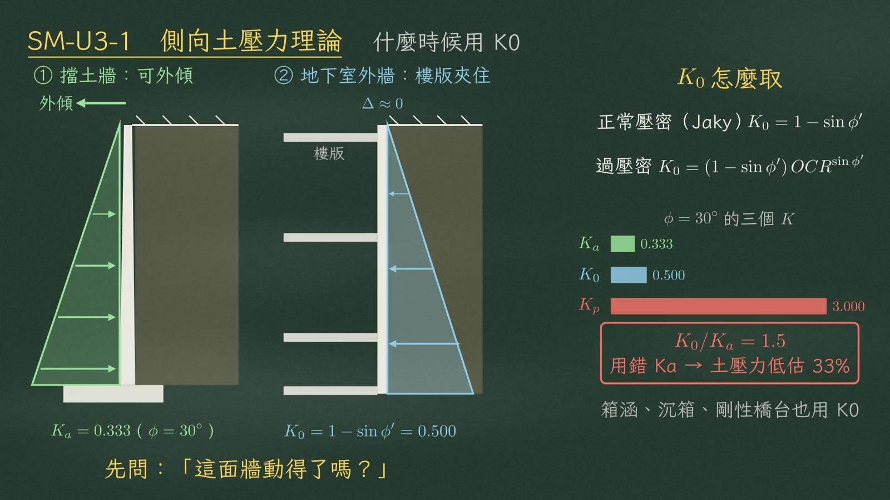
什麼時候不能用 \(K_a\)？結構動不了的時候。擋土牆頂部可以外傾，位移足夠，土壓鬆弛到最小，用 \(K_a\)。地下室外牆被樓版夾住，無法位移，壓力留在原地，要用靜止土壓力 \(K_0\)。先問一句：這面牆動得了嗎？
\(K_0\) 怎麼取？正常壓密土用 Jaky 公式；過壓密土再乘 OCR 的 \(\sin\phi'\) 次方，甚至可能大於 1：
箱涵、沉箱、剛性橋台也都用 \(K_0\)。
9Rankine vs Coulomb
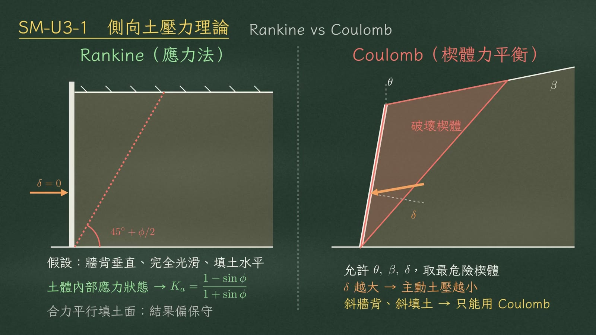
Rankine 和 Coulomb，差在牆背怎麼看。
| Rankine（應力法） | Coulomb（楔體力平衡） | |
|---|---|---|
| 假設 | 牆背垂直、完全光滑（\(\delta=0\)）、填土水平 | 承認牆背摩擦角 \(\delta\)；允許牆背傾斜 \(\theta\)、填土傾斜 \(\beta\) |
| 推導 | 從土體內部的應力狀態推導 | 取最危險的楔體做力平衡 |
| 破壞面 | 傾角 \(45^\circ+\phi/2\) | 最危險楔體 |
| 合力方向 | 平行填土面 | 和牆背法線夾 \(\delta\) |
| 結果 | 偏保守 | \(\delta\) 越大，主動土壓越小 |
10被動土壓力
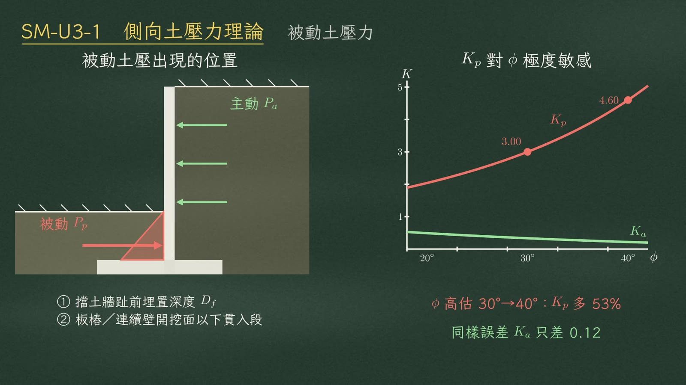
被動土壓力，算得出來，不一定用得到。它出現在擋土牆趾前的埋置深度 \(D_f\)，以及板樁開挖面以下的貫入段。
\(K_p\) 對 \(\phi\) 極度敏感：\(\phi\) 從 30° 高估到 40°，\(K_p\) 從 3 變成 4.60，多了 53%；同樣的誤差，\(K_a\) 只差 0.12。
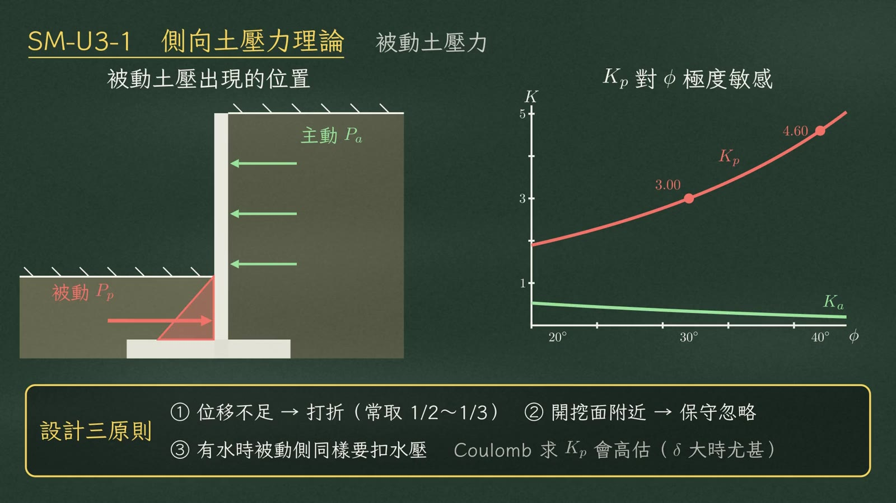
② 開挖面附近的被動土可能被移除或擾動，保守忽略。
③ 有水時被動側同樣要扣水壓。
另外，Coulomb 求 \(K_p\) 會高估，\(\delta\) 大時尤其明顯。
11總結
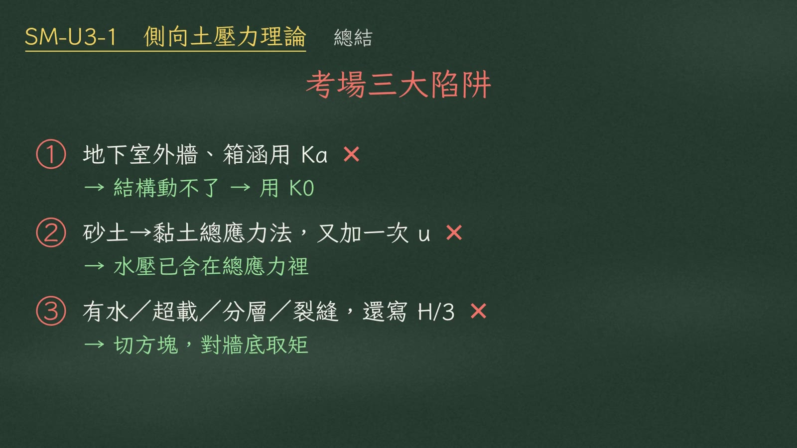
② 砂土切換到黏土總應力法時，又把水壓加一次 → 水壓已含在總應力裡。
③ 剖面有水、超載、分層或裂縫，還反射性寫 \(H/3\) → 切方塊，對牆底取矩。
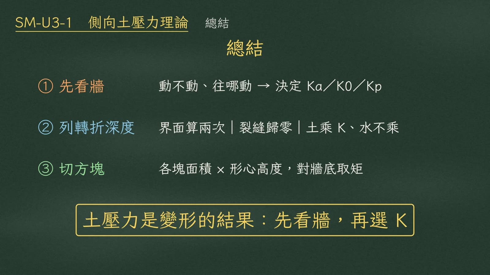
② 再列轉折深度：界面算兩次、裂縫歸零、土乘 \(K\)、水不乘。
③ 最後切方塊、對牆底取矩。